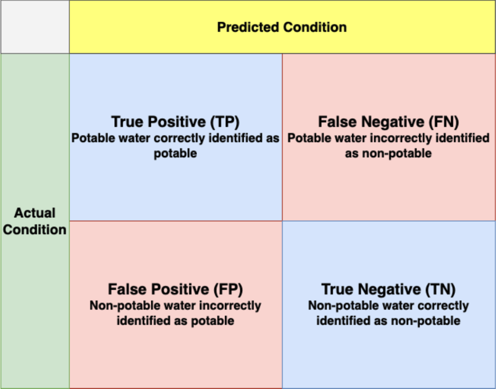

Intro

Problem:
Access to safe drinking water is essential to health and a basic human right, though many developing countries and even parts of the U.S. like Flint, Michigan are living with contaminated drinking water. With the increased prevalence of climate change, drinking water is becoming even more negatively impacted by contaminants. In these instances, non-potable drinking water containing unsafe levels of contaminants can have serious adverse health effects, such as gastrointestinal illnesses, cancer, and transmissible diseases.
There are various water quality metrics that may contribute to the potability of drinking water. We want to analyze different metrics that may more heavily contribute to water being non-potable which could, in the real world, help formulate effective policy for health protection through implementation of systems that specifically de-contaminate the water of these substances. In some regions, it has been shown that investments in water supply and sanitation can yield a new economic benefit, since the reductions in adverse health effects and health care costs outweigh the costs of undertaking the interventions.
Questions:
1. What is the distribution of each metric in regards to potable and non-potable water quality and can observations about water potability and selected metrics be made when other metrics are at varied levels?
2. How well can machine learning models accurately predict the non-potability of water?
Background Information:
Water quality describes the condition of water and thus, to what extent it is safe for humans to utilize at different capacities (drinking, swimming, etc.). Understanding the quality of the water we drink is an integral component to protecting our health as well as the health of the environment. Contaminated water has been the root of numerous global health-related crises and lack of access to clean water in America, for example, can be further explained by the current structural and systematic racism embedded within society.
771 million people (1 in 10) lack access to safe water. Approximately 829,000 individuals are predicted to die every year from diarrhea as a result of unsafe drinking water, poor hand hygiene, and poor sanitation.
Current challenges to water supply systems include population growth, climate change, increasing water scarcity, demographic changes, and urbanization. The increasing rate of population growth contributes to the increased scarcity of clean water as the global human population reached 8 million in mid-November 2022. Additionally, the growing prevalence of climate change around the world is also affecting water access by disrupting water patterns and through the emergence of extreme weather events. For example, hotter, drier mountains leach more metal into water sources from abandoned mines and natural deposits, causing more acidified and contaminated drinking water.
Reapplying this to the real world:
- The Flint Water Crisis was a prime example of how our past responses and interventions during crises have shaped our current local, global, and national relationships between societies and people in the U.S.
- Individuals and children in developing countries and low-income areas have to bear the burden of this crisis due to the avarices of those in positions of power.
- Improving and optimizing water quality is a collective responsibility to work towards improving water sources for disproportionate areas while also addressing and eradicating health and racial disparities for both small communities such as Flint Michigan, American society, and the world at large.
How water is cleaned:
- In the U.S., water from surface and ground sources are treated to levels that meet state and federal standards for consumption by disinfecting and filtering the water or by meeting specific criteria for avoiding filtration so specific contaminants are controlled at certain levels.
- The EPA established maximum contaminant levels for various contaminants here.
- Water from natural sources is treated for microorganisms, bacteria, toxic chemicals, viruses, and fecal matter.
EXPLORATORY DATA ANALYSIS
A datasest containing water quality metrics for 3276 different water bodies.
Predictor Variables:
- pH VALUE: acidic or basic/alkaline condition
- HARDNESS: caused by calcium and magnesium salts
- SOLIDS: mineralization of organic minerals or salts
- CHLORAMINES: disinfectants (chlorine + ammonia)
- SULFATES: naturally occurring substance present in minerals, soil, rocks
- CONDUCTIVITY: determined by amount of dissolved solids
- ORGANIC CARBON: carbon in decaying natural organic matter and synthetic sources
- TRIHALOMETHANES: chemicals found in water treated with chlorine
- TURBIDITY: depends on quantity of solid matter present; measure of light emitting properties of water
Target Variable:
- POTABILITY: indicator of whether water is safe for human consumption where 1 = Potable (good water) and 0 = Not Potable (bad water)
DATA CLEANING:
- Removed rows containing at least one NA
- Converted "Potability to a factor (categorical variable)
- Recoded the target variable to signify 1 as “Potable” and 0 as “Not Potable”
DISTRIBUTION OF DATA BETWEEN POTABLE & NON-POTABLE

CORRELATION HEATMAP
Visualizes low correlation between predictor variables
METHODS
Shiny App:
This app is an interactive way to further analyze the potability and non-potability of water according to different metrics in this dataset. Each water quality metric has its own tab in the app of its distribution that is connected to each of the metric slider inputs. The distributions are visualized through both a histogram and box plots that are divided by potability level with red as non-potable and green as potable. The recommended levels and thresholds for each metric are also included in order to clearly visualize how the distributions relate to normal health standards. Overall, these visualizations are meant to demonstrate the varying distribution levels of each metric and their potability considerations. The interactivity of the slider inputs was implemented into these distributions in order for one to test and see how a varied level of one or more metrics can impact other metric distributions.
Machine Learning Models:
Initially, we wanted to use more various methods including unsupervised methods such as clustering, but our target variable (Potability) on the dataset was preset with categorical variable (1 = potable, 0 = non_potable), so we were not able to identify correlations between predictor variables and the target variable. Therefore, given that condition, the best options for creating machine learning models were Random Forest method and Decision Tree method. For the Decision Tree, we tried different techniques to improve the model by altering the maxdepth, threshold, etc. We worked towards optimizing the random forest model by increasing and decreasing the number of trees and nodesize. Aligning to the original dataset which categorized “Potable” as “1” and “Not_Potable” as 0, we designated the positive class in these models as water being identified as “Potable.”
When cleaning the data, we noticed a number of NA values both in the pH and Sulfates columns. Initially, we planned to remove these columns, however we wanted to determine whether these properties played a significant role in determining water potability and did not want to risk skewing the predictions and model accuracy. Moreover, the pH column was a critical component that we wanted to keep as assessing the effect of pH potability connects back to the issue of climate change and how the change in weather has made the ocean and other bodies of water more acidic. As a result, we decided to remove the NA values and keep both columns. Applying to both models, we partitioned the data, creating train, tune, and test sets that were split into 80,10, and 10 percent of the data, respectively. In an attempt to improve our models, we removed several of the variables that did not contribute any importance to the target variable, however the accuracy percentage did not change. Thus, we re-added them, ultimately keeping all of the columns.
RESULTS & EVALUATION
Evaluation of Shiny App:
A majority of the metrics displayed in this app have a dense amount of the metric distribution outside of the recommended levels and thresholds:
- pH: distribution includes similar amounts of acidic and basic water samples
- Acidic water: metallic taste and contaminants (e.g. lead) due to metal plumbing corrosion
- Basic/alkaline water: slight increase in pH can be beneficial
- Not actively regulated by the EPA
- Hardness: almost all of the data was considered to be hard water
- Not a health risk but has effect on home
- Solids: very strange that the values in the distribution extend to almost 40 times the recommended upper threshold
- Known to be an aesthetic factor of water (mineral water)
- Can include presence of toxic minerals
- Not actively regulated by the EPA
- Chloramines, Sulfates, Organic Carbon: majority of water samples were unsafe in regards to recommended levels
- Chloramines: can cause skin and eye irritation, harsh taste and odor
- Sulfates: can cause strong laxative effects leading to dehydration, bitter taste
- Organic carbon: can cause bladder cancer, reproductive problems, and pregnancy complications
- Trihalomethanes, Turbidity: majority of samples were considered safe
R A N D O M F O R E S T
Variable Importance
Model Visualization

Confusion Matrices

Summary Statistics
Evaluation of Random Forest:
- Overall, the model does a good job in predicting whether someone is drinking non-potable water but does not do a great job at predicting whether the water is potable. Although the focus of this project is on non-potable water, the positive class for this case was “potable”. The predicted accuracy was 66% which is not inadequate but should still be revised for improvement. The sensitivity and specificity values reflect this observation as the sensitivity rate is very low while the specificity rate is very high.
- For the initial random forest, the error was 0.07 which decreased in the second one down to 0.05 which seems promising but still needs some work. The sensitivity value, also known as the true positive rate, is 0.25 which is low and indicates that this model does not perform well at predicting if the water is safe to drink. On the other hand, the specificity value is .93 which is high and indicates that this model does a great job at predicting if the water is unsafe to drink, or the true negative rate.
- Through optimizing the random forest from the initial model, the final accuracy was 66% through changing the number of trees, node size, and sample size. Evaluating the confusion matrix, it appears that the false positive rate is relatively low, which is great as this suggests that the model predicts the water as potable when it is in fact non-potable at a low rate.
- Unfortunately, the false negative rate, which would predict water as non-potable when it is actually potable, is fairly high, which can be a neutral result but can still have detrimental impacts in the real world. This would indicate that the water is predicted as non-potable when it actually is. While it does not harm anyone directly since it would then be advised not to drink it, it indirectly harms those who would need that water the most since this water is deemed non-potable when its actually safe and would go to waste.
D E C I S I O N T R E E
Confusion Matrix

Split data into Train, Tune, and Test sets (80/10/10)
We partitioned our data into train, tune, and test with subsetting 80% of the data into train, and split the rest equally into tune and test.
Ideal Max Tree Depth
We were looking at max tree depths between 1 and 15 at the beginning. The model was substantially improving between depths of 1 to 8. After the depth of 8, the model is overfitting, so we decided to set our optimized max tree depth as 6.
Variable Importance Table
This variable importance is the result when we choose the max tree depth as 6. Looking at the variable importance, the most contributing variables for predicting potability of water are ph and Sulfate.
Decision Tree Model - Max Tree Depth: 6
Our decision tree shows that the data is first split based on Sulfate and then further split based on Sulfate and Solids. The group with the greatest split was Sulfate with the dividing point with level of 261. Compared with the result of variable importance, pH has three dividing points > Sulfate has two dividing points, so it looks to be following the variable importance well.
Initial Model Statistics
Accuracy: 0.6418
Evaluation on Initial Tree
Our initial decision tree has 0.4198 sensitivity and 0.7917 specificity with 0.6418 accuracy. Considering the real world situation, False Negative (which is related to sensitivity) does not cause detrimental effects because people do not drink water if it is identified as non-potable even though it is actually potable. However, the opposite case (False Positive) will cause significant problems (illness), so we need to make sure to reduce the number of False Positives to be able to get a higher specificity.
Improving on the model by adjusting threshold
By adjusting the model’s threshold 0.1 in either direction, we did not see a dramatic change in the model’s overall accuracy as between 0.4 and 0.7 threshold models still have an accuracy around 0.64. We adjusted threshold to 0.6 to get a higher specificity which is 0.96667.
Accuracy: 0.6418
The accuracy has not improved but our specificity has been much improved. Even though the sensitivity and the specificity are not balanced, our specificity has reached to almost 100%.
Summary Statistics

ROC and AUC
AUC value: 0.6326132
An ROC (Receiver Operating Characteristic) curve shows the performance of a classification model at all classification thresholds. This plots True Positive Rate vs. False Positive Rate at different threshold levels. Lowering the classification threshold classified more items as positive, thus increasing both False Positive and True Positives. Our ROC curve is not ideal looking because the shape of ROC is better when a curved line gets close to the top-left corner. However, our goal is to focus on getting a higher specificity on the model to prevent people from drinking incorrectly identified water as potable (actual: non-potable water) instead of balancing sensitivity and specificity, the result of ROC and the value of AUC (Area under the ROC Curve: 0.6326132) does make sense.
CONCLUSIONS

We were trying to increase the accuracy of models on Decision Tree and Random Forest. Given that the accuracy of the model only reached 66%, the accuracy we were able to reach was around 64% through the Decision Tree model. As our question focused on Non-Potability and creating a model to predict when water is non-potable or in other words, unsafe, we aimed to optimize our models to reduce the False Positive Rate as reflected in the matrix. Specifically, the FP rate suggests that the model predicts the water to be potable when it is actually non-potable. For the decision tree, we tried different methods such as C5.0 and LGOCV (Leave Group Out Cross Validation) besides rpart2, but the best fit was the rpart2 method considering the overall quality of the model.
We were also able to see the varying levels of each water quality metric in determining whether water is potable or not. It was surprising to notice how very few metrics of the water samples aligned with recommended levels and yet many of those samples were still deemed potable. Looking further into how possibly dangerous the metrics with distributions higher than recommendations were, we realized that some of the metrics are not regulated in the U.S., so they might not pose as great of a risk to the public, but others could have real potential health issues at high levels.
FUTURE WORK
- Do more analysis involving geographical data to implement as another factor of water quality (climate change, agriculture, etc.)
- Improve the model to better predict water as potable and increase the overall accuracy
- Figure out how to connect the Shiny app to the existing machine learning models
- Look at a bigger size of data or any related data that we can combine/merge so that allows us to train the models and predict with better accuracy
SOURCES